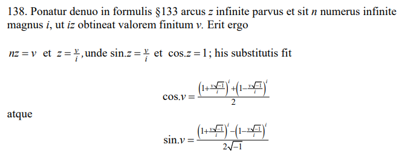
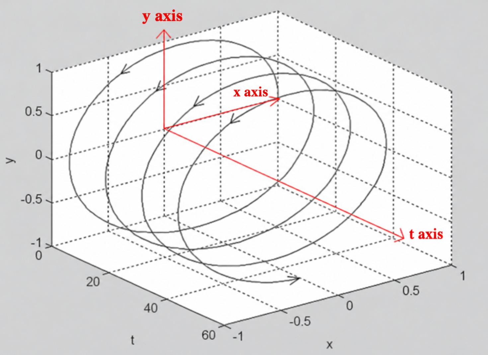
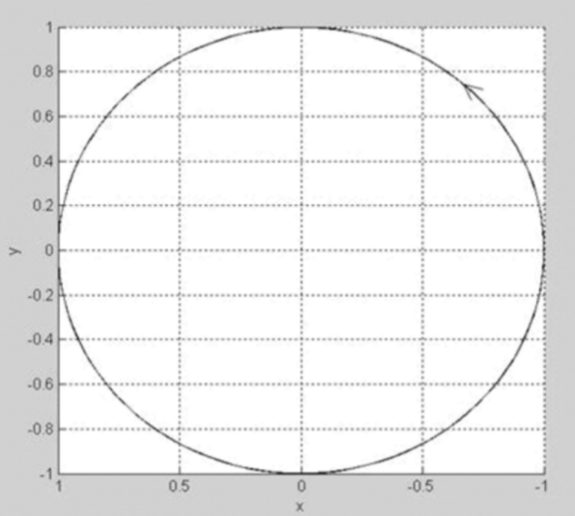
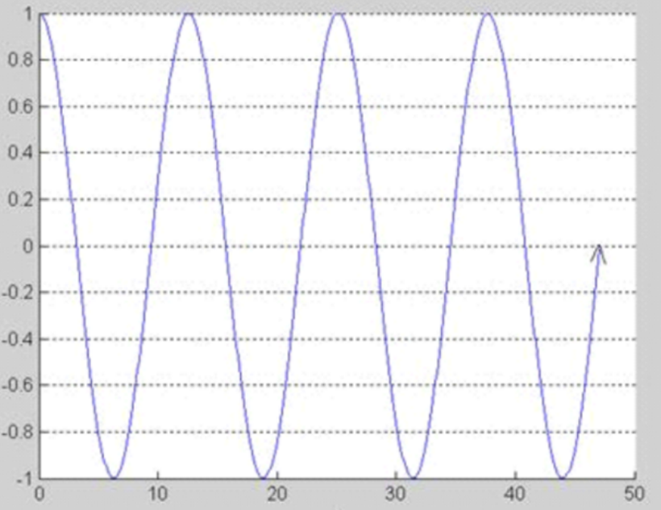
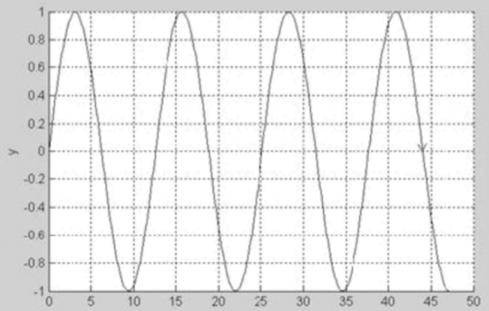

From Imaginary Numbers to FFT — Part 1: Imaginary Numbers and Euler’s Formula
Before we begin
When I first encountered imaginary and complex numbers, I found them really hard to get my head around. Mathematicians in the past felt much the same way. Even negative numbers and fractions, which we now take for granted, once gave mathematicians a hard time.
We must recognize that, in the history of mathematics and the development of mathematical thought, extensions and new inventions like these are never the result of one person’s efforts alone. They are the products of a gradual, cumulative process, and we cannot give most of the credit to any single person. Negative and rational numbers were needed to carry out formal calculations. Unlike natural numbers, they were neither intuitive nor concrete. It was not until the end of the Middle Ages that mathematicians began to feel comfortable using these concepts.
— What Is Mathematics? An Elementary Approach to Ideas and Methods, Chapter II, §5, Part 1: The Origin of Complex Numbers
So before we learn about imaginary and complex numbers, it is worth looking back at how negative integers and fractions were defined, step by step.
Positive integers
Positive integers (1, 2, 3, …) are among the earliest mathematical concepts humans developed, with origins stretching back to prehistoric times. In early civilizations, people gradually formed the idea of natural numbers out of everyday counting needs—keeping track of game, food, or other possessions. At first, this number system contained only positive integers. It did not include zero or negative numbers, because there was no direct real-world counterpart for those ideas at the time.
As natural numbers became widely used, people drew basic rules of arithmetic from practical experience, such as the commutative, associative, and distributive laws. These laws did not appear out of thin air; they came from concrete actions in everyday life.
The history of negative integers
To introduce the new symbols −1, −2, −3, … into an enlarged arithmetic containing both positive and negative integers, we must, of course, define their operations so that the original rules of arithmetic remain unchanged.
For example, we define multiplication of negative numbers by the rule
because we want to preserve the distributive law . If we instead let and set a = −1, b = 1, c = −1, we would get
Yet, on the other hand, we actually have
It took mathematicians a long time to realize that the definitions governing negative numbers and fractions cannot be “proved.” We create them so that we can calculate freely while preserving the basic laws of arithmetic. What can—and must—be proved is that, on the basis of these definitions, the commutative, associative, and distributive laws continue to hold.
The history of fractions
We prove the commutative law for the addition of fractions by expanding the equality:
A pattern in the history of negative integers and fractions
Introducing new symbols to extend a domain, while ensuring that the laws holding in the original domain continue to hold in the larger one, is a characteristic feature of mathematical generalization.
Introducing imaginary numbers
A simple equation such as has no real solution, because the square of any real number cannot be negative. We can either be content to declare this simple equation unsolvable, or follow the familiar path of extending our idea of number to introduce numbers that make the equation solvable. That is exactly what we do when we introduce the new symbol by the definition .
Establishing the rules for complex arithmetic
We define the addition and multiplication of complex numbers using the rules
On the basis of these definitions, it is easy to verify that the commutative, associative, and distributive laws hold for complex numbers.
The history of Euler’s formula
In university courses, Euler’s formula is usually derived quite simply using Taylor series:
Substituting gives
Separate the series into real and imaginary parts:
Recognizing the Taylor series for and , we have
Therefore,
But here is the question: deriving Taylor series over the real numbers depends on the concept of derivatives. Why can we apply the Taylor formula directly to complex numbers?
The key idea is that we expect Taylor series that hold over the real numbers to continue to hold over the complex numbers.
In fact, Euler first presented Euler’s formula in his own Introduction to the Analysis of the Infinite in 1748.
The original text is available online as a PDF below, including both the Latin original and an English translation.
Introductio in Analysin Infinitorum (1748)

Complex analysis had not yet been established in 1748. It was not systematically developed by Cauchy until the nineteenth century. So at the time, whether Taylor’s formula held over the complex numbers had not yet been rigorously proved.
That is why, when Euler’s formula was first proposed, it directly followed the idea of “extending a domain so that the laws holding in the original domain continue to hold in the larger one.”
A visual explanation of the complex exponential
Here is Euler’s formula in pictures. (Images from the web; I will remove them if they infringe anyone’s rights.)





